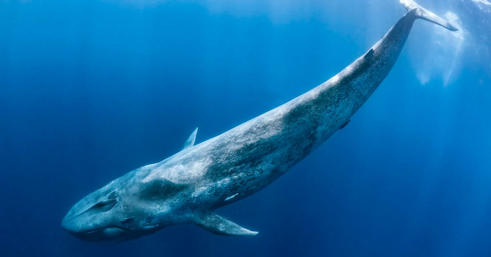

The blue whale (balaenoptera musculus) is the largest known animal to have ever lived on Earth, reaching lengths of up to 30m and weighing as much as 130,000kg.

Quick Facts
Blue whales are found in all of the planet's oceans with the exception of the Arctic Ocean.
A blue whale's tongue weighs as much as an elephant, while its heart is the size of a car.
A blue whale's diet consists mostly of krill, and it eats up to 40 million of them every day.
Blue whale's are the loudest animals on Earth, with their calls reaching as many as 188 decibels (louder than a jet engine).
Other whales can hear their calls from up to 1600km away.
Blue whales are classified as an endagered species, with a global population of between 10-25,000, down from an estimated 300,000 before whaling reduced their numbers significantly.
A blue whale's lifespan is between 80-90 years on average.
Although blue whales must surface to breathe, they can dive to depths of up to 500 metres and can spend around 35 minutes underwater.
Blue whale calves are born more than seven metres long and weigh up to 3,000kg (as much as a fully grown rhinoceros).